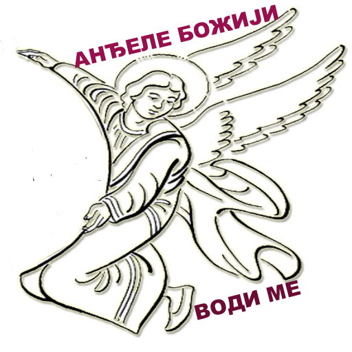

У име Оца и Сина и Светога Духа. Амин. Молитвама Светих Отаца наших, Господе Исусе Христе, Боже наш, помилуј нас. Амин. Свети Боже, Свети Крепки, Свети Бесмртни помилуј нас. (3 пута) Слава Оцу и Сину и Светоме Духу, сада и увек и у векове векова. Амин. Пресвета Тројице, помилуј нас; Господе, очисти грехе наше; Владико, опрости безакоња наша; Свети, посети и исцели немоћи наше, имена Твога ради. Господе, помилуј. (3 пута) Слава Оцу и Сину и Светоме Духу, сада и увек и у векове векова. Амин. Оче наш који си на небесима, да се свети име Твоје, да дође царство Твоје, да буде воља Твоја и на земљи као што је на небу; хлеб наш насушни дај нам данас; и опрости нам дугове наше као што и ми опраштамо дужницима својим; и не уведи нас у искушење, но избави нас од злога. Помилуј нас, Господе, помилуј нас, јер ми грешници, немајући никаквог оправдања, Теби као Владару приносимо ову молитву, помилуј нас. Слава Оцу и Сину и Светоме Духу. Господе, помилуј нас, јер се у Тебе уздасмо; не гневи се јако на нас, нити помињи безакоња наша, него и сада као милостив погледај и избави нас од непријатеља наших. Јер си Ти Бог наш и ми смо људи Твоји, сви смо дело руку Твојих и име Твоје призивамо. И сада и увек и у векове векова. Амин. Отвори нам двери милосрђа, благословена Богородице, да не погинемо ми, који се у Тебе надамо, него да се Тобом избавимо од беда, јер си Ти спасење рода хришћанскога. Господе, помилуј. (12 пута)
Достојно је, ваистину, блаженом звати Тебе, Богородицу, увек блажену и пренепорочну и Матер Бога нашега. Часнију од Херувима и славнију неупоредиво од Серафима, Тебе што Бога – Реч непорочно роди, ваистину Богородицу величамо. Блага Мајко благога Цара, пречиста и благословена Богородице Маријо, милост Сина Твога и Бога нашег излиј на моју страсну душу, и Твојим молитвама упути ме на добра дела, да бих остало време живота свога провео без порока и Тобом рај нашао, Богородице Дјево, једина чиста и благословена.